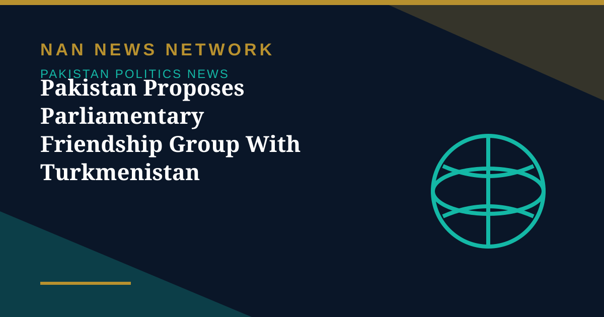

Pakistan Proposes Parliamentary Friendship Group With Turkmenistan

Pakistan has proposed establishing a parliamentary friendship group in Turkmenistan's parliament to strengthen inter-parliamentary dialogue and expand bilateral cooperation, according to a press release from Pakistan's National Assembly reported on October 29.
The Islamabad meeting
The proposal was discussed at a meeting between Pakistan's Parliamentary Friendship Group with Turkmenistan, led by its convener Sanjay Perwani, and Turkmenistan's Ambassador to Pakistan, Atadjan Movlamov, at the Parliament House in Islamabad. Members of Pakistan's National Assembly, including Fateh Ullah Khan and Khawaja Izhar ul Hassan, also attended.
A long-standing relationship
Perwani highlighted the longstanding relations between the two countries, recalling Pakistan's early recognition of Turkmenistan's independence and reaffirming support for the country's policy of permanent neutrality. Pakistan and Turkmenistan established diplomatic relations on May 10, 1992.
What cooperation covers
The participants discussed ways to strengthen parliamentary relations and expand cooperation between the two countries, including continued high-level engagement, parliamentary exchanges and cooperation on regional and international issues. Energy and regional connectivity remain key areas of bilateral cooperation, particularly the Turkmenistan-Afghanistan-Pakistan-India (TAPI) gas pipeline project, alongside discussions on electricity transmission and fibre-optic connectivity.
The meeting concluded with a reaffirmation of the commitment to strengthening bilateral relations through parliamentary diplomacy, trade and economic cooperation, and closer people-to-people ties.
Sources: Public news reports, October 2026.
More on Pakistan Politics News
- National Assembly Session Suspended After Speaker Finds House Lacks Quorum
- Lahore High Court Judge Mohsin Akhtar Kayani Resigns, Citing Executive Grip on Judiciary
- Pakistan Says Afghan Firing Kills One in South Waziristan Border District
- Pakistan Marks Kashmir Black Day With Rallies Across the Country
- National Assembly Passes Seven Private Members' Bills, Sends Six to Committees
- Pakistan Strongly Condemns Houthi Missile Attacks Near Makkah and Madinah
- Pakistan, Saudi Arabia and Turkiye Reported to Hold Tehran Talks on De-escalation
- Pakistan LPG Shortage Worsens as Iran Border Crossings Close
- Pakistan Ends Machine-Readable Passports and Switches Fully to E-Passports
- Pakistan Calls for a Fairer Global Order at the United Nations